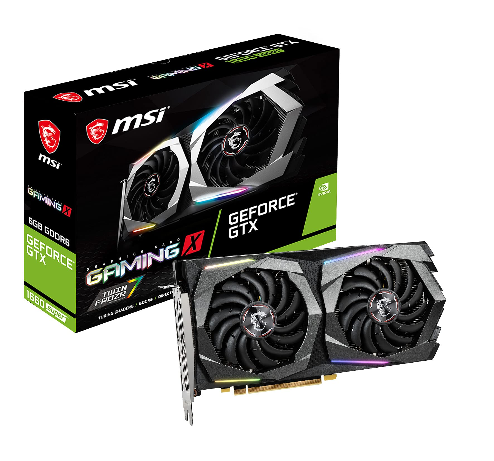
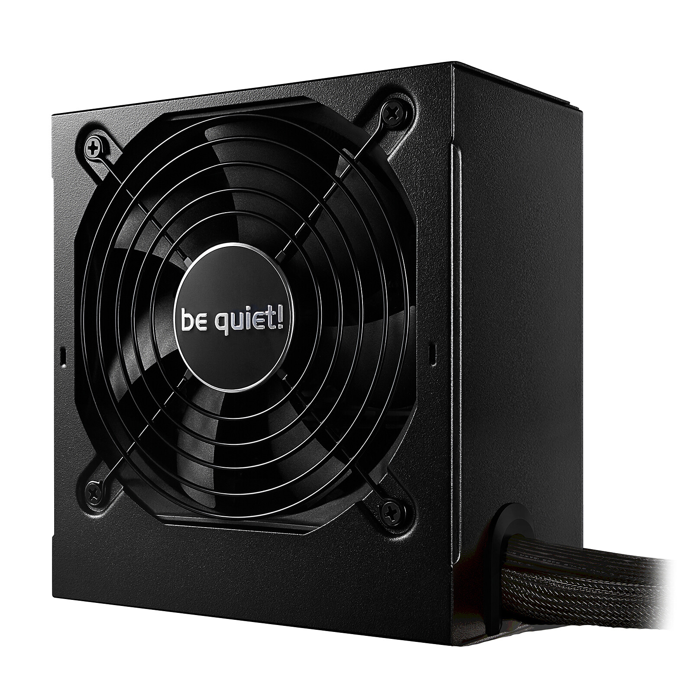

MY PC
|
MOTHERBOARD 
Материнська плата AMD B450 Ultra Durable із Realtek ® GbE LAN із cFosSpeed, PCIe Gen3 x4 M.2, підтримка 7-кольорових світлодіодних стрічок RGB, резистор проти сірки, підтримка CEC 2019
|
CPU 
AMD Ryzen 5 3600X, 6C/12T, 3.80-4.40 ГГцШестиядерний процесор AMD Ryzen 5 3600X OEM-відмінний варіант для комплектації ігрового комп'ютера. Перед вами-модель екстра-класу, можливості якої достатні для ефективного використання ігор, насичених високодеталізованою графікою. Базова частота пристрою - 3800 МГц. У турборежимі частота зростає до 4400 МГц. Максимально допустимий обсяг пам'яті дорівнює 128 ГБ.В ході експлуатації температура процесора може досягати 95 °C. Більше інформаціі тут |
|
GPU

MSI NVIDIA GeForce GTX 1660SUPERЕфективна відеокарта MSI NVIDIA GeForce GTX 1660SUPER має свою пам'ять 6 Гб, яка працює на частоті 14000 МГц. Вона разом із процесором, частота роботи якого 1530-1815 МГц, забезпечує швидкодію, гарантує відсутність зависань. Завдяки портам різного типу можливе одночасне підключення трьох моніторів. Більше інформаціі тут |
COMPUTER CASE Enermax Makashi MK50Підтримка адресної синхронізації освітлення RGB Просторий салон із підтримкою материнської плати E-ATX Рухомий відсік для жорсткого диска для встановлення БЖ на 20 см Більше інформаціі тут |
|
RAM HyperX Fury DDR4ЕHyperX Fury DDR4 автоматично розганяється до заданих максимальних частот до 3466 МГц. Це більша продуктивність підключай і працюй для ігор, редагування відео та рендерингу. Fury DDR4 готова до XMP і доступна зі швидкістю від 2400 МГц до 3466 МГц, затримкою від CL15 до CL16 і з ємністю одного модуля від 4 ГБ до 16 ГБ і ємністю комплекту від 16 ГБ до 64 ГБ. Завдяки автоматичному розгону за функцією plug-and-play для швидкості 2400 МГц і 2666 МГц, він, звичайно, сумісний з останніми процесорами Intel і AMD. HyperX Fury DDR4 зберігає прохолоду завдяки своєму стильному тонкому радіатору. Більше інформаціі тут |
POWER SUPPLY

be quiet!System Power 10 U 550W розроблений для економних користувачів, які не хочуть відмовлятися від надійності та тихої роботи. Розширені функції, такі як вентилятор із регулюванням температури та надзвичайно низьке споживання в режимі очікування, підкреслюють цінність System Power 10 U 550 Вт як джерела живлення початкового рівня. Більше інформаціі тут |